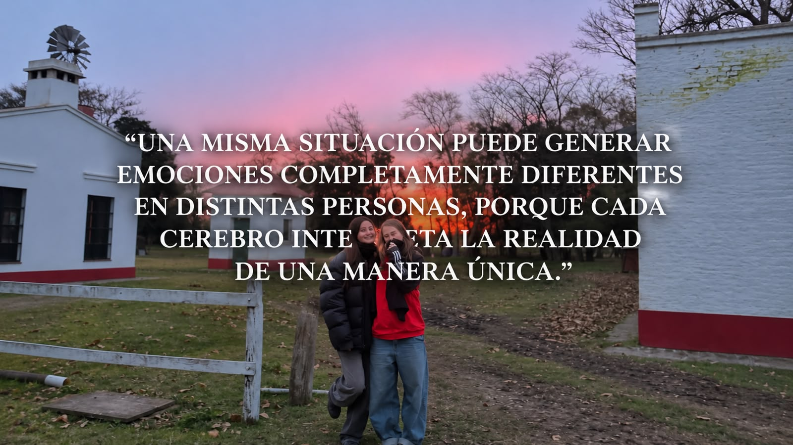

Algo que me gusta es trabajar con otras personas, compartir ideas y escuchar diferentes opiniones para llegar a un objetivo en común. Trabajar en equipo no significa solamente dividirse las tareas, sino también aprender a ponerse de acuerdo, ayudarse cuando alguien lo necesita y aprovechar las fortalezas de cada integrante. Por eso considera la habilidad de Trabajo Colaborativo en Equipos Híbridos. A lo largo del colegio tuve distintas experiencias en las que aprendí la importancia de colaborar con los demás y aportar lo mejor de mí para lograr un buen resultado.Por ejemplo el seminario que hice con Ema, trabajamos mucho en equipo para poder dar una charla sobre un tema profundo e importante.
Volver a las habilidades© 2026 - Mi Portfolio